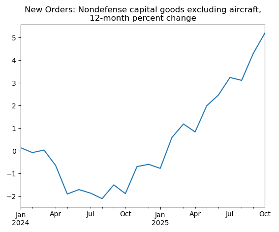

U.S. Census Bureau Application Programming Interface with Python
The Census Bureau API provides access to a wide range of economic indicators, including manufacturing, trade, and business data. This tutorial demonstrates how to retrieve data from the M3 Manufacturers' Shipments, Inventories, and Orders survey using Python.
The example below retrieves the value of new orders for nondefense capital goods excluding aircraft. This serves as a proxy for new investment in business equipment and is a closely watched indicator of business investment trends.
Background
Census Bureau
The U.S. Census Bureau collects data on manufacturing activity through several surveys. The M3 survey provides monthly estimates of shipments, inventories, and orders for domestic manufacturing establishments.
API Documentation
Information on what is required to make the API call is available in the variables documentation. The list of individual series codes is in the code list PDF.
Python
This example uses Python 3 and the requests and pandas packages.
Example: Nondefense Capital Goods Orders
Setup
The Census API key is stored locally in a file called config.py. You can register for a free API key at the Census Bureau website.
In[1]:
import requests
import pandas as pd
import config
key = config.census_keyBuild the API URL
In this example, category_code is NXA which represents nondefense capital goods excluding aircraft. The data_type_code is the seasonally adjusted value, VS. Data are retrieved for the period from 2022 onward.
In[2]:
base = 'https://api.census.gov/data/timeseries/eits/advm3'
param = 'cell_value,time_slot_id'
time = '&time=from+2022'
cat = '&category_code=NXA'
dtc = '&data_type_code=VS'
oth = '&for=us&seasonally_adj=yes'
url = f'{base}?get={param}&key={key}{cat}{dtc}{time}{oth}'Request data from the API
Request data from the API and interpret the result as JSON. This will convert the JSON response into a Python list of lists.
In[3]:
r = requests.get(url).json()Convert to pandas DataFrame
Read the results into a pandas DataFrame. The first row (index 0) contains the headers. Convert the dates to datetime format and calculate the 12-month growth rate in percent.
In[4]:
df = pd.DataFrame(r[1:], columns=r[0])
df.index = pd.to_datetime(df['time'] + '-01')
df.index.name = ''
df = df.sort_index()
data = df['cell_value'].astype('float').pct_change(12) * 100Plot the results
Create a line plot showing the 12-month percent change since 2024.
In[5]:
title = ('New Orders: Nondefense capital goods excluding aircraft,'+
'\n12-month percent change')
data.loc['2024':].plot(title=title)
plt.axhline(0, lw=0.5, color='gray', zorder=0)
plt.show()Out[5]:
Conclusion
The Census API provides straightforward access to key manufacturing and trade indicators. By adjusting the category_code and data_type_code parameters, you can retrieve various series from the M3 survey, including shipments, inventories, and orders across different product categories.